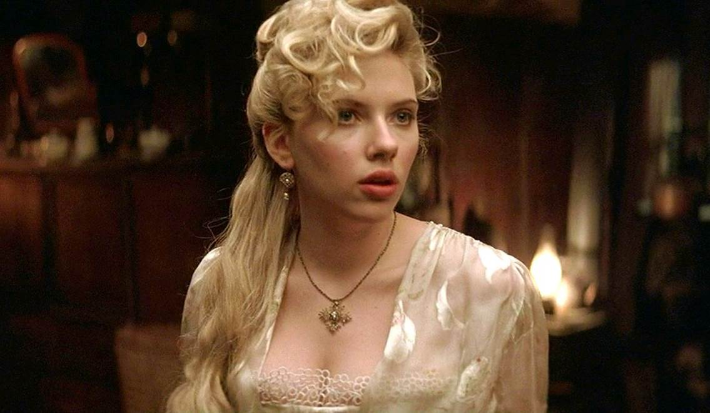
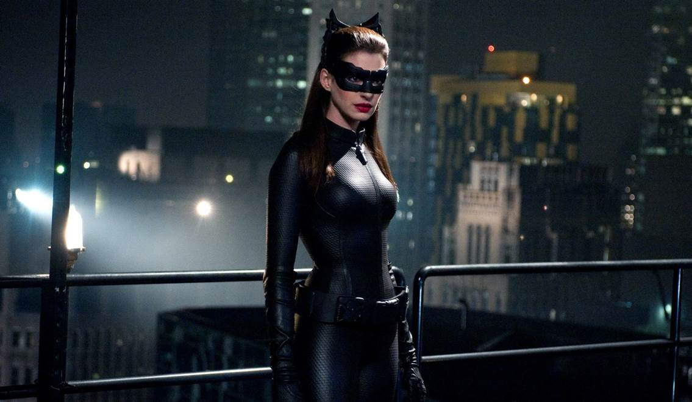

Christopher Nolan Và Dàn Mỹ Nhân Thượng Hạng Trên Màn Ảnh
Điện ảnh đương đại những năm gần đây có một đại diện nổi bật mang tên Christopher Nolan. Ông được xem là một trong những đạo diễn tài năng có thể tạo ra các bom tấn đầy chất lượng, công phá doanh thu phòng vé. Hơn 20 năm qua, Nolan đã thành công trong việc tập hợp dàn diễn viên tài năng cùng tham gia hợp tác trong nhiều tác phẩm ấn tượng The Dark Knight, Inception, Interstellar, Dunkirk và phim mới sắp phát hành mang tên Tenet.
Được cộng tác với Nolan là một vinh dự cho bất kỳ diễn viên nào, khá nhiều dự án đã trở thành bệ phóng tên tuổi cho các gương mặt tiềm năng. Bên cạnh những cái tên như Heath Ledger, Michael Cain, Christian Bale, Tom Hardy..., còn có không ít mỹ nhân Hollywood đã khẳng định tài năng của mình khi xuất hiện trong phim của đạo diễn tỉ đô. Hãy cùng điểm danh những nhan sắc tiêu biểu nhất từng góp mặt trong thế giới điện ảnh của Christopher Nolan.
Scarlett Johansson: The Prestige

Trước khi làm mưa làm gió tại vũ trụ điện ảnh Marvel, nàng Góa Phụ Đen đã từng gây thương nhớ khi sánh bước bên Người Sói Hugh Jackman và Batman Christian Bale trong The Prestige. Đây là một trong những bộ phim làm nên tên tuổi của đạo diễn Christopher Nolan.
Ngay từ đầu, Nolan đã muốn Johansson đảm nhận vai diễn cô trợ lý xinh đẹp quyến rũ. Chính Scarlett cũng bị thuyết phục ngay lập tức sau khi đọc kịch bản. Vẻ kiều diễm của cô đào quyến rũ bậc nhất tại Hollywood đương đại càng thêm phần lôi cuốn trong The Prestige, nhờ vào bàn tay của nhà thiết kế trang phục Joan Bergin.
Anne Hathaway: The Dark Knight Rises và Interstellar

Anne Hathaway từng tưởng rằng mình sẽ thử vai Harley Quinn khi đến gặp Christopher Nolan. Người đẹp bật cười khi nhớ lại cô đã chọn một chiếc áo kỳ cục, mà không biết rằng vị đạo diễn đang tìm kiếm diễn viên cho vai Catwoman trong siêu phẩm The Dark Knight Rises. Khi phim ra mắt, diễn xuất đầy ấn tượng và ma mị của Hathaway nhận được rất nhiều sự yêu mến từ phía khán giả.
Tinh thần làm việc chuyên nghiệp của Anne Hathaway trong Interstellar tiếp tục cho thấy Nolan không nhìn lầm người. Chỉ riêng cảnh phim hai nhà du hành vũ trụ trong bộ đồ phi hành gia, đáp xuống hành tinh đầy nước đã khiến cô vất vả vật lộn dưới lớp quần áo vừa nặng vừa cứng suốt nhiều giờ. Thay vì phàn nàn, Anne Hathaway đã tự động viên bản thân và hoàn thành phân cảnh vốn đã khó khăn cho các nam diễn viên.
Marion Cotillard: Inception và The Dark Knight
Vẻ đẹp lãng mạn đậm chất Pháp cùng diễn xuất đỉnh cao của chủ nhân tượng vàng Oscar, đã được chứng minh qua hai tác phẩm của Nolan. Trong Inception, cô vào vai Mal, vợ của Dom - một đạo chích bậc thầy, có khả năng xâm nhập vào cõi vô thức của người khác thông qua giấc mơ và đánh cắp những bí mật sâu kín của họ.
Với The Dark Knight Rises, Marion Cotillard thể hiện nhân vật Miranda Tate. Đây là một nữ doanh nhân thông minh, mạnh mẽ và vô cùng quỷ quyệt khi bị bị hé lộ thân phận thật sự. Marion chính là Talia Al Ghul, con gái của Ra's al Ghul, một trong những kẻ thù nguy hiểm đối đầu với Batman.
Nolan từng chia sẻ về Marion Cotillard rằng “Cô ấy quá xuất sắc để bạn không muốn phí hoài tài năng ấy. Quả là một nữ siêu nhân”.
Elizabeth Debicki - Tenet
Người đẹp 9x đến từ Australia đã có màn ra mắt thành công tại Hollywood năm 2013 với The Great Gatsby. Sau đó, cô liên tục xuất hiện trong nhiều tựa phim bom tấn như The Man from U.N.C.L.E., Guardians of the Galaxy Vol. 2, The Cloverfield Paradox và gần đây nhất là Widows của đạo diễn Steve McQueen. Chiều cao ấn tượng 1m9 kết hợp với nhan sắc quyến rũ của Debicki khiến cô nổi bật trước dàn diễn viên nữ tại Hollywood.
Bên cạnh ngoại hình xuất sắc, Elizabeth cũng cho thấy bản thân không phải là “bình hoa di động”. Cô từng hóa thân vào nhân vật Alice trong Widows xuất sắc đến nỗi đạo diễn Christopher Nolan hiểu nhầm Debicki là một người Mỹ thực sự, suýt nữa đã từ chối trao cho cô vai diễn trong bom tấn Tenet. Vị đạo diễn kiệt chọn cô cho nhân vật mà ông nghĩ rằng “Phải toát lên được vẻ đẹp quý phái của một bông hồng nước Anh trong siêu phẩm của mình”.
Tenet là bộ phim hành động lấy đề tài điệp viên, theo chân một tổ chức gián điệp bí ẩn, nắm trong tay thứ vũ khí có khả năng thao túng và nghịch đảo thời gian, nhằm thực thi sứ mệnh ngăn chặn Chiến tranh Thế giới thứ III từ trước khi nó xảy ra.
Đây sẽ là cơ hội cho việc nâng cao tên tuổi của Debicki khi được cộng tác với đạo diễn Christopher Nolan, cùng hàng loạt diễn viên đình đám như Robert Pattinson, Michael Caine hay John David Washington. Vai trò của cô cho tới nay vẫn là một ẩn số, nhưng với tài năng của Nolan thì người hâm mộ có thể yên tâm vào một tuyến nhân vật thú vị, đầy chiều sâu mà Debicki đảm nhận.
TENET được quay trên định dạng 70mm và IMAX - dự kiến ra mắt tại các rạp chiếu phim với định dạng 2D và IMAX 2D từ ngày 28.08.2020